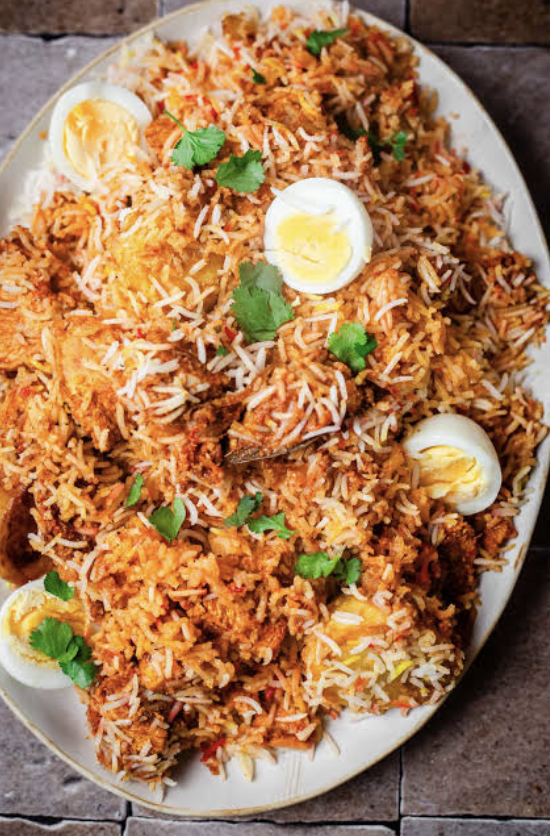

My family always looked forward to special occasions because it meant someone would make chicken biryani. My grandma always said, Biryani brings everyone to the table.
Over time, we tried different versions, but this classic recipe remained everyone’s favorite. The layers of rice, spices, and chicken bring back memories of celebrations and big family meals.
| Ingredient | Amount |
|---|---|
| Basmati rice | 2 cups |
| Chicken (bone-in pieces) | 1.5 lbs |
| Yogurt | 1/2 cup |
| Onions, thinly sliced | 2 large |
| Ginger-garlic paste | 2 tbsp |
| Tomato, chopped | 1 medium |
| Biryani masala | 2 tbsp |
| Turmeric powder | 1/2 tsp |
| Chili powder | 1 tsp |
| Whole spices (bay leaf, cinnamon, cardamom, cloves) | 1 tbsp total |
| Oil or ghee | 1/4 cup |
| Water | 3 cups |
| Salt | to taste |
| Instructions:
1. Soak rice 30 mins. Fry onions until golden, set aside half for garnish. 2. In same pot, add whole spices, ginger-garlic paste, tomato; cook 2 mins. 3. Add chicken, yogurt, biryani masala, turmeric, chili, salt. Cook until chicken is browned. 4. Layer rice over chicken, add water. Cover and cook on low until rice is tender and chicken is cooked through. 5. Top with fried onions and cilantro. Serve hot. |
|
| Prep Time | 30 mins |
| Servings | 6 |